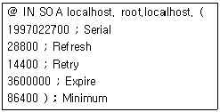
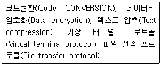
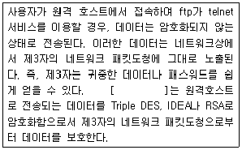
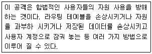
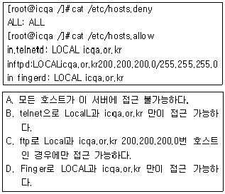

인터넷보안전문가-2급 (2001-06-03 기출문제)
1과목: 정보보호개론
1. 인터넷 보안과 관련된 용어의 설명으로 틀린 것은?
- 바이러스(Virus) : 어떤 프로그램이나 시스템에 몰래 접근하기 위하여 함정 같은 여러 가지 방법과 수단을 마련하여 둔다.
- 웜(Worm) : 자기 스스로를 복사하는 프로그램이며, 일반적으로 특별한 것을 목표로 한 파괴행동은 하지 않는다.
- 트로이 목마(Trojan Horse) : 어떤 행위를 하기 위하여 변장된 모습을 유지하며 코드(Code) 형태로 다른 프로그램의 내부에 존재한다.
- 눈속임(Spoof) : 어떤 프로그램이 마치 정상적인 상태로 유지되는 것처럼 믿도록 속임수를 쓴다.
(정답률: 알수없음)

2. 데이터 암호화 표준(DES)에 대한 설명으로 잘못된 것은?
- DES의 보안은 암호화 알고리즘의 비밀성에 있지 않다.
- DES의 보안은 주어진 메시지를 암호화하는데 사용되는 키의 비밀성에 있다.
- DES를 이용한 암호화 기법과 관련 알고리즘을 비밀키, 혹은 대칭 키 암호화라고 한다.
- 암호화나 해독과정에서 같은 공개키가 사용된다.
(정답률: 알수없음)
3. 암호화 메커니즘에 대한 설명 중 틀린 것은?
- 문서구조 : PKCS.7,PEM 또는 PGP
- 서명 알고리즘 : RSA 또는 DSA
- 문서 축약 알고리즘 : MD2, MD5 또는 SHA
- 제한 모드 : RSA, In-band, Out-band, D-H Kerberos
(정답률: 알수없음)
4. 보안의 4대 요소에 속하지 않는 것은?
- 기밀성
- 무결성
- 확장성
- 인증성
(정답률: 알수없음)
5. 전자상거래 보안의 기본원칙이 아닌 것은?
- 신원확인
- 인증
- 개인정보보호
- 전자서명
(정답률: 알수없음)
6. 다음 중 보안 체제를 구축하기 위한 고려사항이 아닌 것은?
- 외부망과의 물리적 연결점 보안
- 패킷 필터링
- 호스트 보안
- 퍼스트 버츄얼
(정답률: 알수없음)
7. 시스템관리자가 사용자의 인증을 위한 사용자 ID 발급시에 주의할 점이 아닌 것은?
- 시스템에 의해 식별 될 수 있는 유일한 사용자 ID를 발급해야 한다.
- 사용자 ID와 패스워드의 두 단계의 인증을 하는 ID를 발급해야 한다.
- 일정기간 후에는 개별 사용자의 의지와는 관계없이 사용자 ID를 변경함을 제시한다.
- 시스템에 허용되는 접근의 종류는 반드시 제시하고 제한한다.
(정답률: 알수없음)
8. 다음 중 은폐형 바이러스로 기억장소에 존재하며 마치 감염되지 않은 것처럼 백신 프로그램을 속이게끔 설계된 바이러스의 형태는 몇 세대 바이러스인가?
- 1세대
- 2세대
- 3세대
- 4세대
(정답률: 알수없음)
9. 정보 보호를 위한 컴퓨터실의 보호 설비 대책으로 거리가 먼 것은?
- 컴퓨터실은 항상 남향으로 하고 태양빛이 잘 들게 한다.
- 화재대비를 위해 소화기를 설치하고 벽 내장재를 방화재나 방열재로 내장한다.
- 출입문에 보안 장치를 하고 감시 카메라 등 주야간 감시 대책을 수립한다.
- 컴퓨터실은 항상 일정한 온도와 습도를 유지하게 한다.
(정답률: 알수없음)
10. 다음 중 정보보호 관련 법령에 위반되어 법적 제제를 받을 수 있는 것은?
- 웹 서비스를 통한 회원 등록시 회원 관리를 위한 회원 동의를 거친 개인 정보 기록
- 불필요한 전자 메시지류의 전자 우편 수신 거부
- 웹 서비스 업체에 회원 등록시 불성실한 개인 정보 등록
- 동의를 받지 않은 친구의 신용카드를 이용하여 전자 상거래에서 전자 결재
(정답률: 70%)
2과목: 운영체제
11. Kerberos의 용어 설명 중 잘못된 것은?
- AS : Authentication Server
- KDC : Kerbers 인증을 담당하는 데이터 센터
- TGT : Ticket을 인증하기 위해서 이용되는 Ticket
- Ticket : 인증을 증명하는 키
(정답률: 알수없음)
12. 다음 중 권한이 없는 사용이나 장애에 대한 고수준의 보안이 필요한 시스템은?
- Distributed
- Stand-Alone
- Centralized
- Individual
(정답률: 알수없음)
13. 리눅스에서 사용하는 보안 프로그램인 cops에 대한 설명이 아닌 것은?
- /dev/kmem과 다른 디바이스 파일의 읽기/쓰기를 체크
- 여러 중요 파일의 잘못된 모드를 체크
- 모든 사용자의 .cshrc, .profile, .login 과 .rhost 파일 체크
- 텍사스 Austine 대학의 Clyde Hoover에 의해 개발됨
(정답률: 알수없음)
14. 리눅스에서 사용하는 보안 프로그램인 npasswd에 대한 설명이 아닌 것은?
- 최소한의 패스워드길이를 조정할 수 있다.
- /dev/kmem과 다른 디바이스 파일의 읽기/쓰기를 체크
- 단순한 패스워드를 체크해 낼 수 있다.
- 호스트 이름, 호스트 정보 등을 체크할 수 있다.
(정답률: 알수없음)
15. Windows 2000 도메인 로그온 할 때 이용되는 절차가 아닌 것은?
- WinLogon
- TAM
- LSA
- SAM
(정답률: 알수없음)
16. 현재 구동하고 있는 프로세스를 보여주는 명령과 특정 프로세스를 종료하는 명령어가 올바르게 짝지어진 것은?
- ps, halt
- ps, kill
- ps, cut
- ps, grep
(정답률: 72%)
17. 한 개의 랜카드 디바이스에 여러 IP를 설정하는 기능을 무엇이라고 하는가?
- Multi IP
- IP Multi Setting
- IP Aliasing
- IP Masquerade
(정답률: 알수없음)
18. 리눅스 Root 유저의 암호를 잊어버려서 리눅스에서 현재 Root로 로그인을 할 수 없는 상태이다. 리눅스를 재설치 하지 않고 리눅스의 Root 유저로 다시 로그인 할 수 있는 방법은?
- 일반 유저로 로그인한 후 /etc/securetty 파일 안에 저장된 Root의 암호를 읽어서 Root로 로그인한다.
- LILO프롬프트에서 [레이블명] single로 부팅한 후 passwd명령으로 Root의 암호를 바꾼다.
- 일반 유저로 로그인 하여 su 명령을 이용한다.
- 일반 유저로 로그인 한 후 passwd Root 명령을 내려서 Root의 암호를 바꾼다.
(정답률: 알수없음)
19. 리눅스의 네트워크 서비스에 관련된 설정을 하는 설정파일은?
- /etc/inetd.conf
- /etc/fstab
- /etc/ld.so.conf
- /etc/profile
(정답률: 알수없음)
20. 다음은 DNS Zone 파일의 SOA 레코드내용이다. SOA 레코드의 내용을 보면 5 개의 숫자값을 갖는다. 그 중 두번째 값인 Refresh 값의 역할은 무엇인가?

- Primary 서버와 Secondary 서버가 동기화 하게 되는 기간이다.
- Zone 내용이 다른 DNS 서버의 Cache 안에서 살아남을 기간이다.
- Zone 내용이 다른 DNS 서버 안에서 Refresh 될 기간이다.
- Zone 내용이 Zone 파일을 갖고 있는 서버 내에서 자동 Refresh 되는 기간이다.
(정답률: 알수없음)
21. 래드햇 리눅스 6.0이 설치된 시스템에서 RPM 파일로 리눅스 6.0 CD-ROM 안에 들어있는 Apache 프로그램을 이용 웹 사이트를 운영하고 있다. Linuxuser 라는 일반 사용자가. 자기 홈 디렉토리 하위에 public_html 이라는 디렉토리를 만들고 자기 개인 홈페이지를 만들었는데, 이 홈페이지에 접속하려면 웹 브라우저에서 URL을 어떻게 입력해야 하는가? (서버의 IP는 192.168.1.1 이다.)
- http://192.168.1.1/
- http://192.168.1.1/linuxuser/
- http://192.168.1.1/-linuxuser/
- http://192.168.1.1/~linuxuser/
(정답률: 알수없음)
22. NFS 서버에서 Export 된 디렉토리들을 클라이언트에서 알아보기 위해 사용하는 명령은?
- Mount
- Showexports
- Showmount
- Export
(정답률: 알수없음)
23. 삼바 데몬을 리눅스에 설치하여 가동하였을 때 열리는 포트를 알맞게 나열한 것은?
- UDP 137,139
- TCP 137,139
- TCP 80,25
- UDP 80,25
(정답률: 알수없음)
24. 리눅스에 등록된 사용자들 중 특정 사용자의 Teltet 로그인만 중지시키려면 어떤 방법으로 중지해야 하는지 고르시오.
- Telnet 포트를 막는다.
- /etc/hosts.deny 파일을 편집한다.
- 텔넷로그인을 막고자 하는 사람의 쉘을 false로 바꾼다.
- /etc/passwd 파일을 열어서 암호부분을 * 표시로 바꾼다.
(정답률: 알수없음)
25. netstat -an 명령으로 시스템의 열린 포트를 확인한 결과 31337 포트가 리눅스 상에 열려 있음을 확인하였다. 어떤 프로세스가 이 31337 포트를 열고 있는지 확인하려면 어떤 명령을 이용해야 하는가
- fuser
- nmblookup
- inetd
- ps
(정답률: 알수없음)
26. WindowsNT에서 www 서비스에 대한 로그파일이 기록되는 디렉토리 위치는?
- %SystemRoot%\Temp
- %SystemRoot%\System\Logs
- %SystemRoot%\LogFiles
- %SystemRoot%\System32\LogFiles
(정답률: 알수없음)
27. Windows2000의 각종 보안관리에 관한 설명이다. 그룹정책의 보안 설정 중 잘못된 것은?
- 계정정책 : 암호정책, 계정 잠금 정책, Kerberos v.5 프로토콜 정책 등을 이용하여 보안 관리를 할 수 있다.
- 로컬정책 : 감사정책, 사용자 권한 할당, 보안 옵션 등을 이용하여 보안 관리를 할 수 있다.
- 공개 키 정책 : 암호화 복구 에이전트, 인증서 요청 설정, 레지스트리 키 정책, IP보안 정책 등을 이용하여 보안 관리를 할 수 있다.
- 이벤트 로그 : 응용 프로그램 및 시스템 로그 보안 로그를 위한 로그의 크기, 보관 기간, 보관 방법 및 엑세스 권한 값 설정 등을 이용하여 보안 관리를 할 수 있다.
(정답률: 19%)
28. 다음은 WindowsNT의 NTFS 파일시스템의 파일에 대한 허가권에 대한 파일 속성이다. WindowsNT의 NTFS 포맷의 파일 속성이 아닌 것은?
- 쓰기(W)
- 허가권 변경(P)
- 실행(X)
- 생성(C)
(정답률: 알수없음)
29. Windows 2000에서 지원하는 사용자암호의 최대 길이는 최대 몇 문자인가?
- 14 문자를 지원하며 Windows NT와 동일하다.
- 128 개의 문자까지 지원한다.
- 255 개의 문자까지 지원한다.
- 255 개의 문자까지 지원하지만, 일부 특수문자를 지원하지 않는다.
(정답률: 알수없음)
30. Deadlock (교착상태) 에 관한 설명으로 가장 알맞은 것은?
- 여러 개의 프로세스가 자원의 사용을 위해 경쟁한다.
- 이미 다른 프로세스가 사용하고 있는 자원을 사용하려고 한다.
- 두 프로세스가 순서대로 자원을 사용한다.
- 두개 이상의 프로세스가 서로 상대방이 사용하고 있는 자원을 기다린다.
(정답률: 알수없음)
3과목: 네트워크
31. 각 허브에 연결된 노드가 세그먼트와 같은 효과를 갖도록 해주는 장비로서 트리 구조로 연결된 각 노드가 동시에 데이터 전송할 수 있게 해주며, 규정된 네트워크 속도를 공유하지 않고 각 노드에게 규정 속도를 보장해 줄 수 있는 네트워크 장비는?
- Switching Hub
- Router
- Brouter
- Gateway
(정답률: 알수없음)
32. LAN에서 사용하는 전송매체 접근 방식으로 일반적으로 이더넷(Ethernet) 이라고 불리는 것은?
- Token Ring
- Token Bus
- CSMA/CD
- Slotted Ring
(정답률: 알수없음)
33. 인터넷 라우팅 프로토콜이 아닌 것은?
- RIP
- OSPF
- BGP
- PPP
(정답률: 10%)
34. 다음 보기와 같은 기능은 OSI 7계층 중 어느 계층에서 제공되는가?

- Data Link Layer
- Network Layer
- Presentation Layer
- Transport Layer
(정답률: 알수없음)
35. 다음은 TCP/IP 프로토콜에 관한 설명이다. 틀린 것은?
- 데이터 전송 방식을 결정하는 프로토콜로써 TCP와 UDP가 존재한다.
- TCP는 연결지향형 접속 형태를 이루고, UDP는 비 연결형 접속형태를 이루는 전송 방식이다.
- TCP와 UDP는 모두 HTTP를 지원한다.
- IP는 TCP나 UDP형태의 데이터를 인터넷으로 라우팅하기 위한 프로토콜로 볼 수 있다.
(정답률: 알수없음)
36. 현재 인터넷에서 사용하는 IP 구조유형은 IPv4이다. 그러나 어드레스의 제한성, 기능성의 문제 비 안정성 등의 문제를 가지고 있어 차세대 IP로 IPv6가 각광을 받고 있다. IPv6는 몇 비트의 어드레스 필드를 가지고 있는가?
- 32 비트
- 64 비트
- 128 비트
- 256 비트
(정답률: 알수없음)
37. TCP의 Header 구성은?
- 각 32비트로 구성된 6개의 단어
- 각 6비트로 구성된 32개의 단어
- 각 16비트로 구성된 7개의 단어
- 각 7비트로 구성된 16개의 단어
(정답률: 알수없음)
38. TCP는 연결 설정과정에서 3-Way Handshaking 기법을 이용하여 호스트 대 호스트의 연결을 초기화한다. 다음 중 호스트 대 호스트 연결을 초기화할 때 사용되는 패킷은?
- SYN
- RST
- FIN
- URG
(정답률: 알수없음)
39. 다음 중 TCP/IP Sequence Number(순서번호)가 시간에 비례하여 증가하는 운영체제는?
- HP-UX
- Linux 2.2
- MS Windows
- AIX
(정답률: 알수없음)
40. 방화벽에서 내부 사용자들이 외부 FTP에 자료를 전송하는 것을 막고자 한다. 외부 FTP에 Login은 허용하되, 자료전송만 막으려면 다음 중 몇 번 포트를 필터링 해야 하는가?
- 23
- 21
- 20
- 25
(정답률: 알수없음)
41. Syn Flooding Attack에 대한 대비를 위한 방법으로 가장 알맞은 것은?
- Backlog Queue 크기조절
- 파이어월에서 Syn Packet에 대한 거부설정
- OS 상에서 Syn Packet에 대한 거부설정
- OS Detection 을 할 수 없도록 파이어월 설정
(정답률: 알수없음)
42. FDDI 네트워크에 대한 설명으로 옳은 것은?
- 에러 정정을 위해 두 개 이상의 링을 가진다.
- 단일 링만을 사용하므로 케이블 절단이 발생하면 전체 네트워크가 중단된다
- 두개의 링을 데이터 전송을 위해 동시에 사용될 수 있다.
- 100Mbps 전송률을 위해 Category 5 케이블을 사용한다.
(정답률: 알수없음)
43. ATM에 대한 설명으로 옳은 것은?
- 사용자가 원하는 전송률을 얻을 수 있게 한다.
- Automatic Transfer Mode의 약자이다.
- 음성, 비디오, 데이터 통신을 동시에 수행 할 수 없다.
- 100Mbps 급 이상의 전송 속도를 나타내는 연결 서비스이다.
(정답률: 알수없음)
44. 다음 중 Fast Ethernet의 주요 토폴로지는 무엇인가?
- BUS 방식
- STAR 방식
- CASCADE 방식
- TRI 방식
(정답률: 알수없음)
45. 다음 중 홉 카운팅 기능을 제공하는 라우팅 프로토콜은?
- SNMP
- RIP
- SMB
- OSPF
(정답률: 알수없음)
4과목: 보안
46. 다음 빈칸( [ ] )에 들어갈 틀의 이름은?

- SSL (Secure Socket Layer)
- Nessus
- Host Sentry
- SSH (Secure Shell)
(정답률: 알수없음)
47. 다음 중 네트워크를 통하는 데이터의 전송량을 비교 분석할 수 있는 보안 툴은?
- COPS (Computer Oracle & Password System)
- Host Sentry
- Hunt
- Nessus
(정답률: 알수없음)
48. 다음 PGP (Pretty Good Privacy)에서 제공하는 기능과 사용 암호 알고리즘이 잘못된 것은?
- 메시지 기밀성 - IDEA, CAST, Triple-DES
- 전자서명 - RSA, SHA-1, MD5
- 압축 - ZIP
- 전자우편 호환성 - MIME
(정답률: 알수없음)
49. OS나 대형 응용 프로그램을 개발하면서 전체 시험실행을 할 때 발견되는 오류를 쉽게 하거나 처음부터 중간에 내용을 볼 수 있는 부정루틴을 삽입해 컴퓨터의 정비나 유지보수를 핑계삼아 컴퓨터 내부의 자료를 뽑아 가는 해킹 행위를 무엇이라고 하는가?
- 트랩 도어 (Trap Door)
- 비 동기성 공격(Asynchronous Attacks)
- 슈퍼 재핑(Super Zapping)
- 살라미 기법(Salami Techniques)
(정답률: 알수없음)
50. 다음 중 암호와 기법 (Cryptography)의 종류로 틀린 것은?
- DES와 RSA
- 보안 커널 (Security Kernel)
- 공용 키 시스템 (Public Key System)
- 디지털 서명 (Digital Signature)
(정답률: 알수없음)
51. 다음 중 연결이 올바른 것은?
- IP Spoofing - IP 데이터그램을 변조
- IP Sniffing - IP 데이터그램의 내용을 변조
- IP Spoofing - IP 데이터그램의 주소를 변조
- IP Sniffing - IP 데이터그램을 변조
(정답률: 알수없음)
52. 다음은 어떤 해킹 방법에 대한 설명인가?

- Buffer Overflow
- Packet Sniffer
- rootkit
- D.O.S
(정답률: 알수없음)
53. 다음 중 방화벽 적용 방식이 아닌 것은?
- Gateway Filtering Firewall
- Packet Filtering Firewall
- Application Gateway Firewall
- Hybrid Firewall
(정답률: 알수없음)
54. 스머핑 공격이란 무엇인가?
- 두개의 IP 프래그먼트를 하나의 데이터그램인 것처럼 하여 공격 대상의 컴퓨터에 보내면 대상 컴퓨터가 받은 두개의 프래그먼트를 하나의 데이터그램으로 합치는 과정에서 혼란에 빠지게 만드는 공격이다.
- 서버의 버그가 있는 특정 서비스의 접근 포트로 대량의 문자를 입력하여 전송하면 서버의 수신 버퍼가 넘쳐서 서버가 혼란에 빠지게 만드는 공격이다.
- 서버의 SMTP 서비스 포트로 대량의 메일을 한꺼번에 보내어 서버가 그것을 처리하지 못하게 만들어 시스템을 혼란에 빠지게 하는 공격이다.
- 공격 대상의 컴퓨터에 출발지 주소를 공격하고자 하는 컴퓨터의 IP주소를 지정한 패킷신호를 네트워크 상의 일정량의 컴퓨터에 보내게 하면 패킷을 받은 컴퓨터들이 반송패킷을 다시 보내게 됨으로써 대상 컴퓨터에 갑자기 많은 양의 패킷을 처리하게 하여 시스템을 혼란에 빠뜨리게 하는 공격이다.
(정답률: 알수없음)
55. Snort가 사전에 정의된 패턴과 일치하는 경우 취하는 특정의 행동이 아닌 것은?
- 특정데이터에 대한 경고
- 특정데이터에 대한 로깅
- 특정데이터에 대한 무시
- 특정데이터에 대한 지연
(정답률: 알수없음)
56. 인증시스템인 Kerberos에 대해 잘못 설명한 것은?
- MIT의 Athena 프로젝트에서 개발한 인증 시스템이다.
- Kerberos는 사용자의 로그인 후 그 신원을 네트워크에 증명해 준다.
- 설치가 수월하다는 장점이 있다.
- Rlogin, Mail, NFS 등에 다양하게 보안 기능을 제공하고 있다.
(정답률: 알수없음)
57. 다음 중 SET(Secure Electronic Transaction)에 대한 설명이 아닌 것은?
- MasterCard사의 SEPP와 Visa사의 STT의 결합된 형태이다.
- RSA Date Security 사의 암호기술을 기반으로 한 프로토콜이다.
- 메시지의 암호화, 전자증명서, 디지털서명 등의 기능이 있다.
- 비 공개키 암호를 사용하여 안전성을 보장해 준다.
(정답률: 알수없음)
58. 다음 Tcp_Wrapper의 설정부를 보고 잘못된 설명으로 연관된 항목을 고르시오.

- A. B
- A, C
- A, B, C
- A, C, D
(정답률: 알수없음)
59. 방화벽의 세 가지 기능이 아닌 것은?
- 패킷필터링(Packet Filtering)
- NAT(Network Address Translation)
- VPN(Virtual Private Network)
- 로깅(Logging)
(정답률: 알수없음)
60. DDOS(Distrivuted Denial of Service)로 알려진 프로그램이 아닌 것은?
- Trinoo
- TFN
- Stacheldraft
- Teardrop
(정답률: 알수없음)
바이러스(Virus)는 자신을 복사하여 다른 프로그램이나 시스템에 감염시키는 악성 코드이다. 웜(Worm)은 자기 스스로를 복사하여 네트워크를 통해 다른 시스템에 전파되는 악성 코드이다. 트로이 목마(Trojan Horse)는 어떤 행위를 하기 위해 변장된 모습을 유지하며, 다른 프로그램의 내부에 숨어서 실행되는 악성 코드이다. 눈속임(Spoof)은 보안 기술을 이용하여 자신의 신원을 숨기거나 다른 사람의 신원을 도용하는 기술이다.